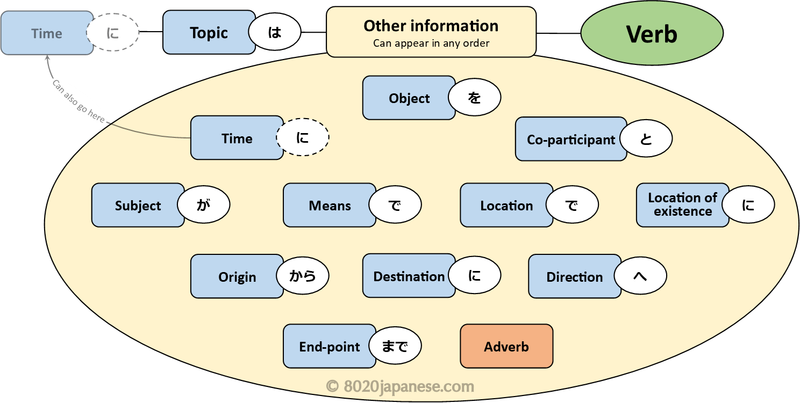
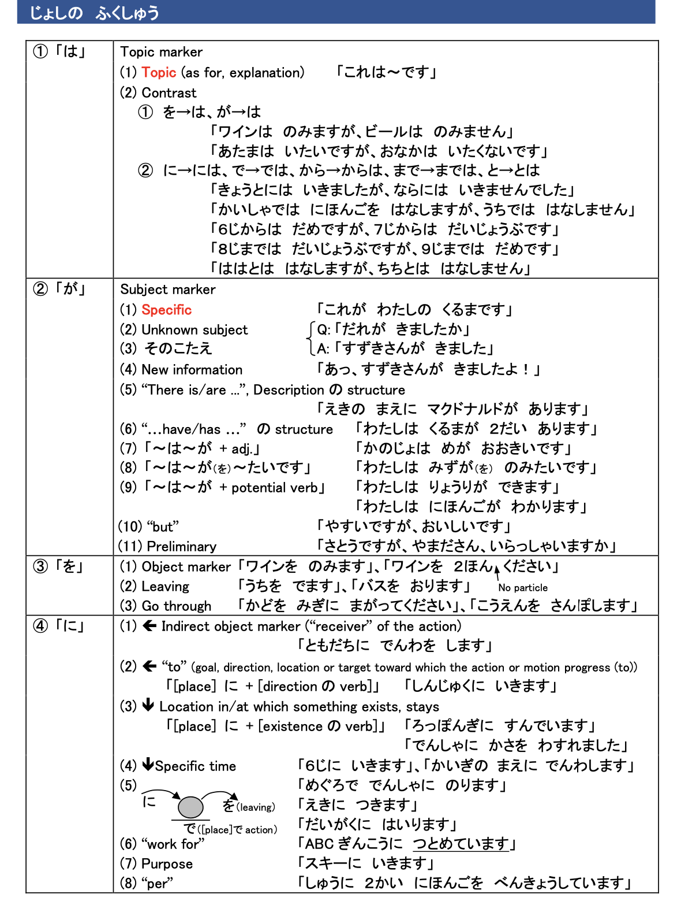
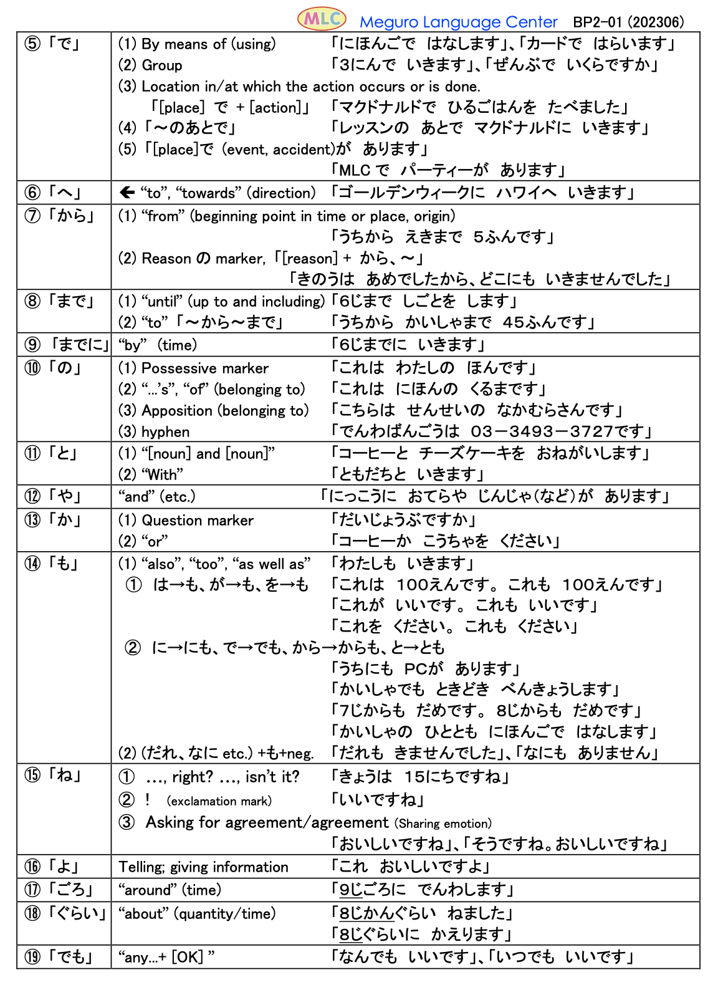

Particles
Particles can be tricky if you don't have a good understanding of each particle and what it does. Luckily, there are some excellent resources available on the internet that cover the particles you are expected to know at a Year 12 level very well. The following image is a summary of the key particle uses in Japanese. You can download the full particle cheatsheet from 8020 Japanese here. The full print-out also has a few sentence structure examples, and in particular sentences with often confused particle pairs such as は・が and に・で.
Image taken from: 8020japanese.com
MLC Japanese also has some helpful
print-outs on particles. They have a good one-page basic summary, and a more in-depth two-page summary (see images
below) with examples of all the different uses of the core particles. You can download these from their website , as
well as worksheets (with answers) to practise particles. They even have a whole section dedicated to は and が
here.
A basic summary of the particles:
Image taken from: MLCJapanese.co.jp
A more in-depth summary of the particles:

Images taken from: MLCJapanese.co.jp